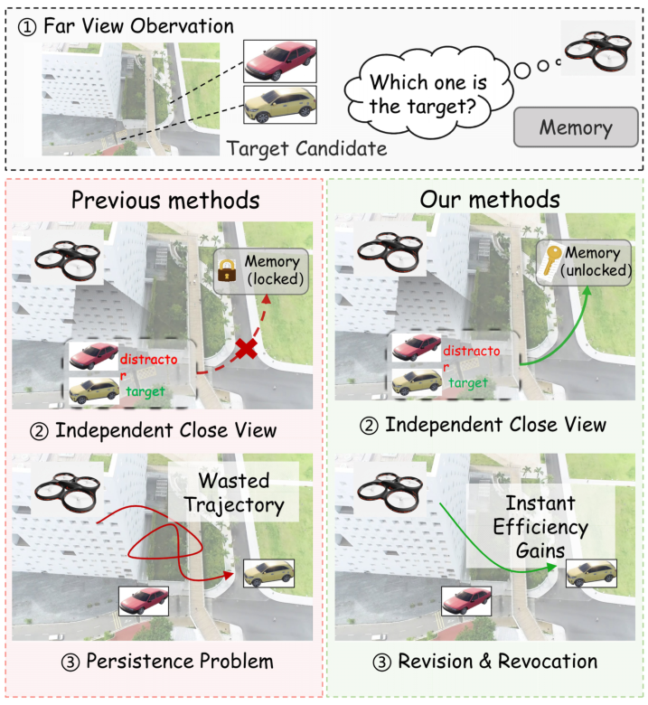
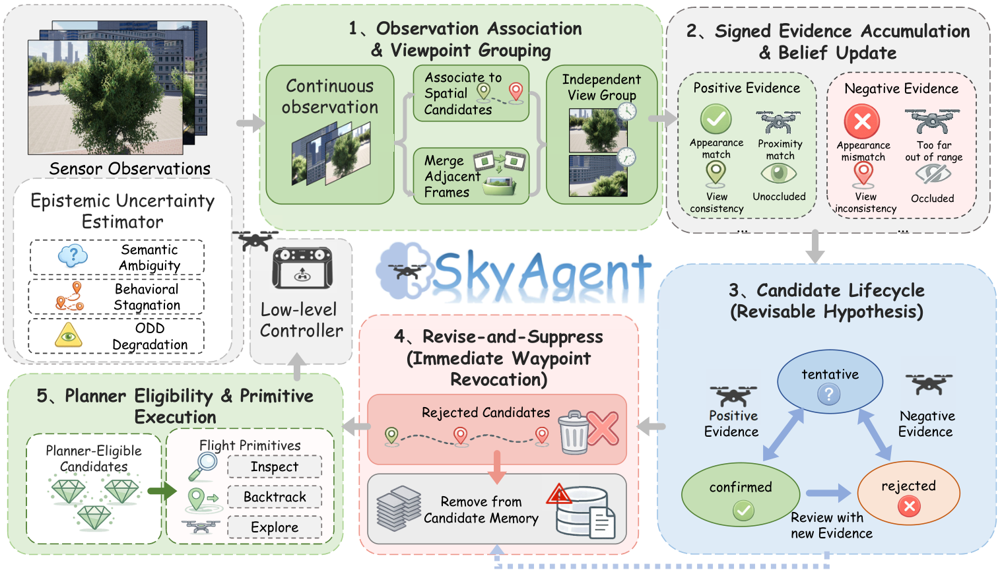
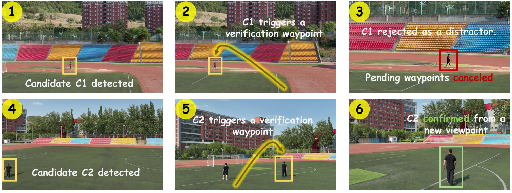

Observation association
Link observations to persistent spatial candidates. Group correlated views so repeated frames do not become independent votes.
1 Aerospace Information Research Institute, Chinese Academy of Sciences
2 Key Laboratory of Target Cognition and Application Technology (TCAT)
3 School of Electronic, Electrical and Communication Engineering, University of Chinese Academy of Sciences
4 Baidu Inc.
* Corresponding author
Continuous aerial search builds target hypotheses from sparse, viewpoint-dependent observations. When later evidence contradicts a stored hypothesis, however, the candidate can remain available to the planner and continue triggering approach or verification actions. We call this trajectory-level failure false candidate persistence (FCP). We equip SkyAgent with Revisable Target Memory (RTM), which associates evidence with persistent candidates, discounts correlated views, and revises each candidate through Tentative, Confirmed, and Rejected states. The key interface binds every generated waypoint to its source candidate: rejection therefore invalidates stale goals, while conservative reactivation protects temporarily occluded targets. Across four splits from the CityAVOS, UAV-ON, and OpenUAV benchmarks, our SkyAgent equipped with RTM outperforms all competitors, improving SR by 2.90–6.31 points while substantially reducing Behavior-FCP and post-contradiction travel with a low false-rejection rate. Across 35 matched real-world DJI scenarios per method, RTM consistently improves task success and behavioral reliability, further validating its state-to-action correction under physical deployment conditions.
Early observations can make a reflection or distractor look like a target. Even after a later view disproves it, a stored candidate can continue triggering approach and verification actions. We call this false candidate persistence (FCP).
SkyAgent equips aerial search with Revisable Target Memory (RTM): accumulate independent evidence, revise the candidate, and cancel every pending waypoint it generated.
Candidate states are revisable. Recovery requires new independent positive evidence.

Every generated waypoint is bound to its source candidate. Memory revision reaches all the way to execution.

Link observations to persistent spatial candidates. Group correlated views so repeated frames do not become independent votes.
Update candidate lifecycle states using supporting and opposing evidence. Rejection invalidates all unexecuted goals from that candidate.
Retain the evidence trail. Allow conservative reactivation after new independent positive views, then resume eligible planning.
Paired internal comparisons across four benchmark splits, with the same tasks, perception, budgets, controllers, and evaluators.
| Benchmark | Episodes | Success rate ↑ | Behavior-FCP ↓ | Waste (m) ↓ |
|---|---|---|---|---|
| CityAVOS-Hard | 380 | 33.95 → 40.26% | 45.18 → 15.27% | 120.76 → 44.21 |
| CityAVOS-Medium | 380 | 45.26 → 48.16% | 20.39 → 7.69% | 55.23 → 24.82 |
| UAV-ON | 1,000 | 20.30 → 23.20% | 29.95 → 12.32% | 90.97 → 40.71 |
| OpenUAV-Hard | 816 | 18.01 → 22.06% | 35.32 → 14.07% | 120.90 → 50.41 |
Source: Table 1. Waste measures post-contradiction travel. See the paper for external baselines, evaluation protocols, and mechanism ablations.
35 matched DJI scenarios per method, 140 trials in total. A distractor is rejected, its pending waypoint is canceled, and search resumes.

Append-only SkyAgent → SkyAgent + RTM, Table 3. The study covers static targets; cross-view association and evidence-model quality remain limitations.
See the paper for the full formulation, evaluation protocols, external baselines, and ablation studies.